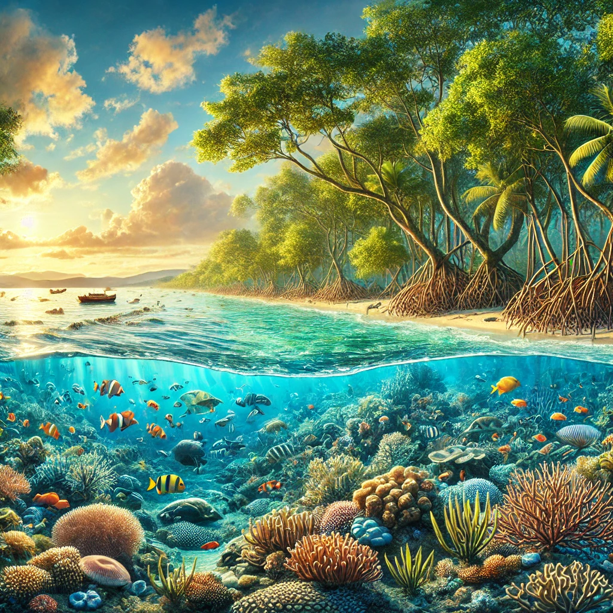
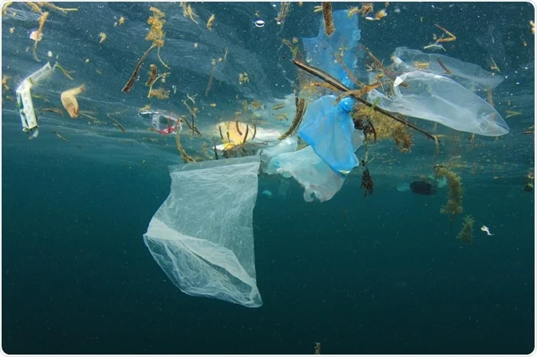
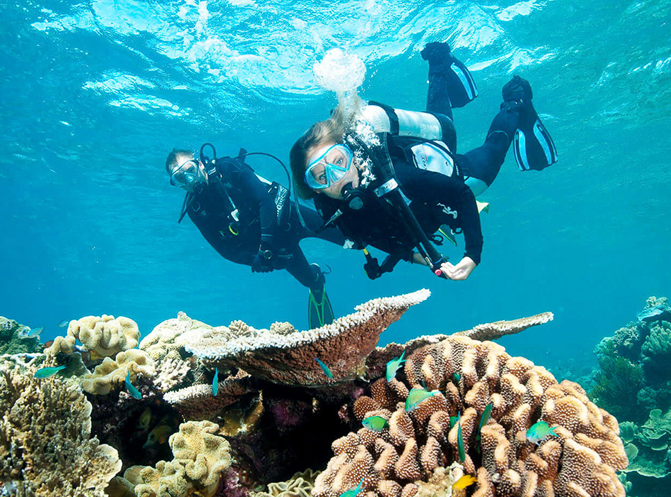
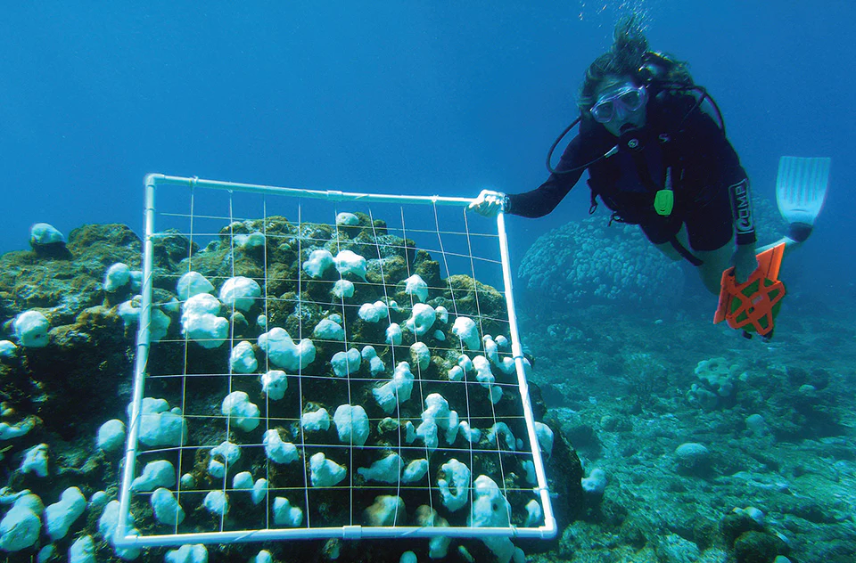

Introduction

Today, oceans cover 71% of the land's surface. They contribute to biodiversity sustenance again by regulating the climate. Oceans also produce oxygen and absorb carbon dioxide. They are polluted, threatened by overfishing, and perpetually changed by anthropogenic activities. That is what is captured in this section-to outline the challenges and conservation efforts needed to keep oceanic life for future generations through sustainable actions and global cooperation.
The Importance of Marine Ecosystems

Marine ecosystems harbor biodiversity: They regulate climate-for example, coral reefs shelter marine species and act synonymously as storm barriers while mangroves prevent erosion and nurture young fishes. Oceans absorb carbon dioxide and thus prevent climate change, at the same time protecting food security, economic equilibrium, and environmental balance for both marine life and man.
Threats to Ocean Life


Pollution of oceans by plastics, overfishing, and destruction of habitats are some of the major dangers facing the oceans today. Millions of tons of plastic are harmful to marine species while overfishing depletes freshwater fish populations. In addition, high temperatures lead to coral bleaching, coastal development disrupts ecosystems, and without immediate conservation intervention, biodiversity loss and disruption to global environmental stability will result from these effects
Conservation Efforts


Examples of such efforts include creating Marine Protected Areas, managing fishing sustainably without destroying the habitats, and reducing plastic wastes. It combines governments and organizations while facilitating the rehabilitation of coral reefs, enforcing laws against access to the oceans, and finally reducing ocean pollution. Such agreement at the global level, together with research and innovative solutions, goes a long way in preserving marine ecosystems for the future use and sustainability of biodiversity within oceans as well as in the livelihoods of the human population.
Call to Action

Individuals can contribute to conserving oceans through reduced use of plastic or by choosing sustainable seafood. Advocating for policies that favor the environment is another significant contribution. Carrying out beach clean-ups, making the word on conservation louder, and associating with conservation programs also help. Little things done by many can transform the environment for posterity.